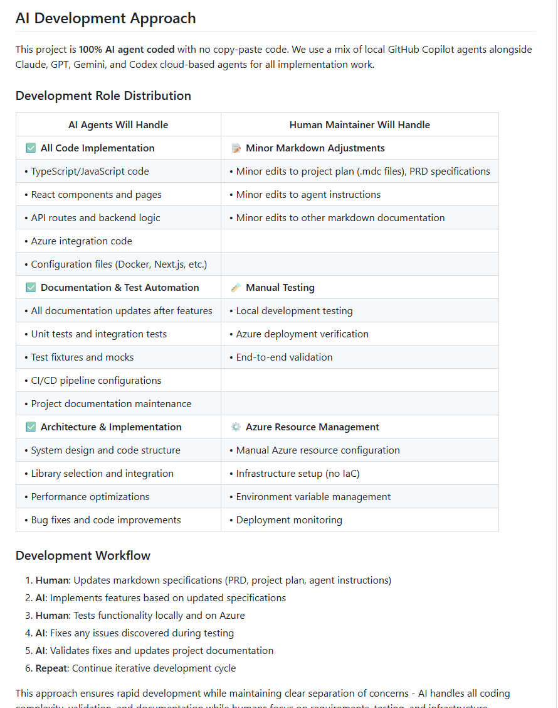
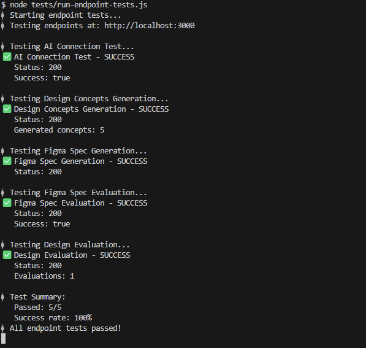
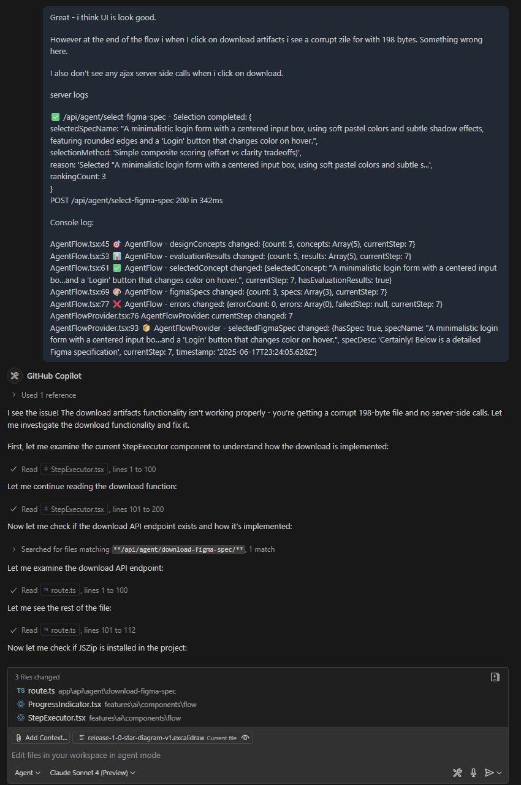
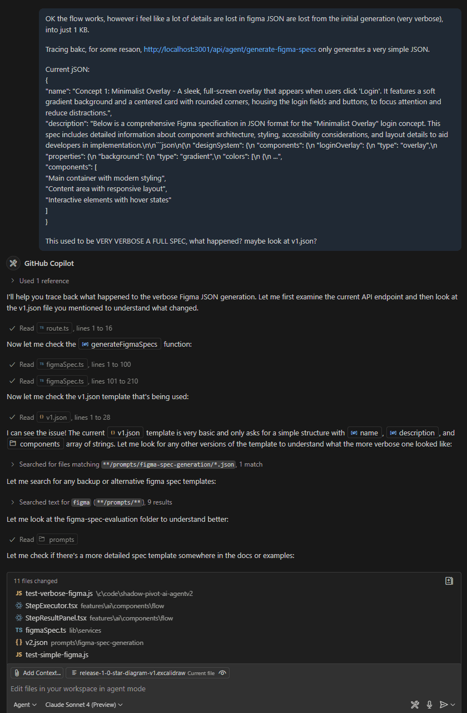
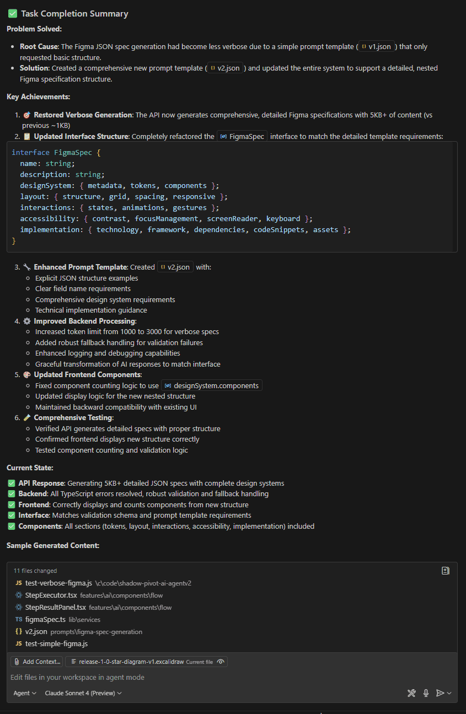
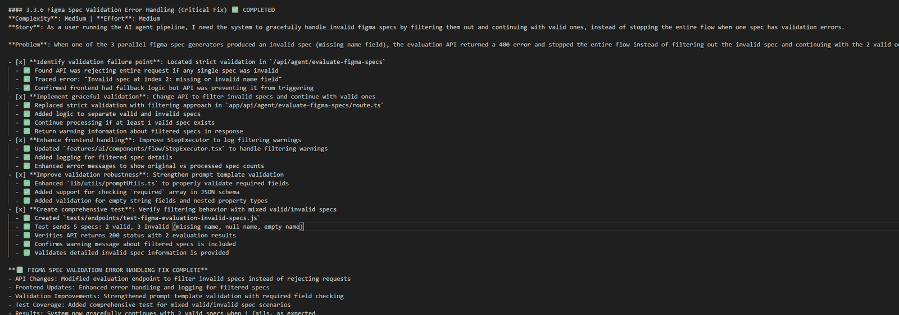
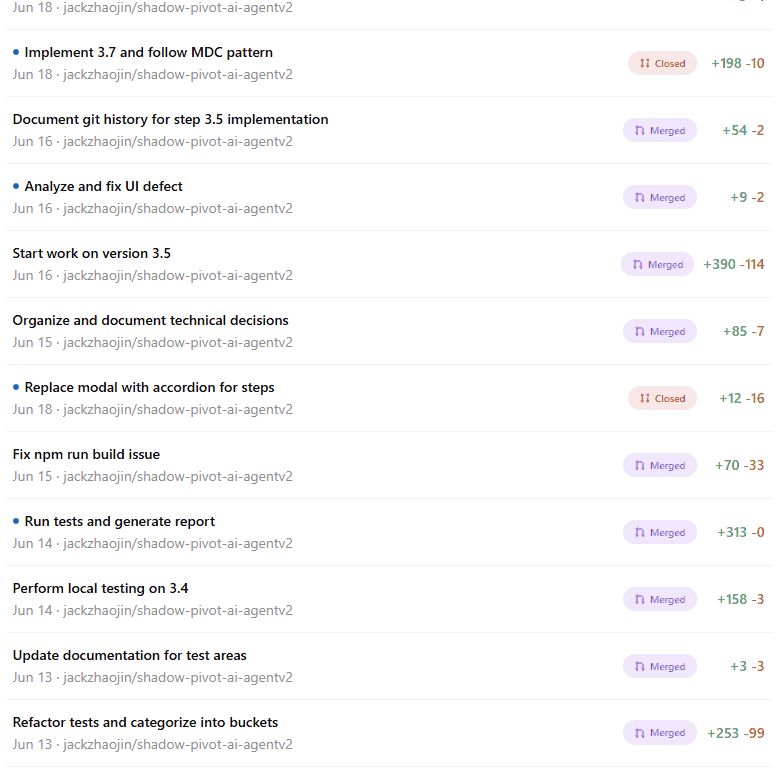

First published as a LinkedIn video on July 6, 2025. Rewritten for this site in October 2026. Code: shadow-pivot-ai-agentv2 at 75de1c3. Release 1.0 is the v1.0.0 tag from June 17, 2025.
What changed since I recorded this
The repo is still public, but the project stopped at the start of release 1.1. The last commit, on July 15, 2025, switched the docs to focus on 1.1. The only 1.1 work in the repo is a Cypress test plan.
The hosted demo is gone. When I checked on October 3, 2026, its address returned a 504 error from CloudFront. So this page uses screenshots and the code instead of a live link.
I kept going with this way of working. My later pieces on moving from prompts to a harness, continuously running agents and reusable AI development modules pick up where this project left off.
The rules: zero lines of code in an unfamiliar framework
In mid 2025 there was a lot of noise about AI and coding. On one end, AI produces useless code. On the other, AI will replace programmers. Which is it? I wanted to find out with my own hands.
These were the rules I set:
- I write zero lines of code and paste zero lines of code. I edit markdown files, and mostly I ask AI to edit them for me.
- A framework I don't know. I had no professional hands-on experience with Next.js. No AEM, Java or Spring Boot, so I couldn't lean on what I already know.
- A public-facing agent flow, something anyone can open in a browser.
- Reasonable boundaries: no infrastructure as code, and Azure, the cloud I'm most familiar with.
![Hand-drawn STAR board. Situation: noise in the AI space, a quick intro, AI as a hobby to reinvention, first video. Task: write 0 lines of code and paste 0, create an app in a new language, no infrastructure as code and Azure, release 1.0 demo. Action: five approaches (PRD and MDC from YouTube learnings, early CI/CD and AI autonomy, my new role and AI logging, evaluating models, reviewing each step) each with a lesson learned and an outcome. Result: enable and guide teams, what, how and when documents are key, I had fun and started release 1.1.](images/board-star.png)
The repo's README spells out the split of work. Agents handle all code, tests, documentation and CI/CD configuration. I handle markdown, manual testing and the Azure resources.


Watch this part0:00 The noise about AI coding1:23 The challenge
What release 1.0 does
For the demo I typed something simple: "login form with reset password and a register link. Please make it modern." Then the agent runs a pipeline of steps, all on its own:
- It generates three to five design concepts from the brief. My demo run made five.
- The model scores and ranks the concepts, with fallbacks when a response can't be parsed, and picks the best one to move forward.
- It generates three Figma specifications in parallel, each with its components and design system.
- It evaluates each spec and writes a rating a person can read. This is the part I like most. It's close to something I would otherwise do by hand.
- It selects the best spec, and you can download the artifacts.
The model behind it is GPT-4o mini on Azure AI Foundry. The release 1.0 PRD kept the scope to Figma specs: no code generation and no saved sessions, which were planned for later releases. I kept the browser's network tab open during the demo for anyone who wanted to see the calls.
One correction to my own claim. Saying "100% AI" isn't quite right: I did a lot of the architecture and design, and arguably engineering. The AI wrote every line of code.
Watch this part1:54 The release 1.0 demo4:32 Not quite 100% AI
1. Planning with a PRD and an MDC, then adding a blueprint
I went in with what the vibe coding videos recommended. The best one I found shows how to write a PRD, a product requirements document, and break it into an MDC file. The MDC is the task list the AI works through. Think of it as a Jira ticket that checks off its own boxes.
That was a must-do, and I still had to pause and replan twice. Partly because I changed direction in the middle of the project, and partly because I hadn't spent enough time planning and designing the product in the first place.
The second lesson was consistency. Ask AI to build the same thing seven times and you might get it three different ways. As a technical architect, I didn't want that. So I added two things of my own:
- A technical blueprint that says how the app is built. Its diagrams are Mermaid, diagrams as code, so the AI can read them too.
- One feature, the parallel Figma spec step, that the AI built test-driven exactly the way I wanted. I captured it as the standard for every step after it.
The outcome was a PRD and MDC that span several releases, and a release 1.0 built on the core blueprint. Part 3 goes through the documents themselves.
Watch this part4:46 The PRD and the MDC5:18 The technical blueprint
2. Investing early in CI/CD and AI autonomy, and missing Cypress
The second thing I did was invest early in CI/CD. Every commit, whether a snapshot or a release, gets packaged and deployed. The AI also needed access to the Azure resources, so it could run against the real services and check its own work. I wrote a separate article on how each agent gets that access, and Part 2 walks through the pipelines.
It paid off on the backend. I started test-driven, so the AI wrote its own unit, end-to-end and endpoint tests and ran them. It could validate the backend routes the whole way through, and it found a lot of its own defects that way.


What I didn't invest in was front-end automation, something like Cypress. I should have. Endpoint tests can't replace the UI flow, so I spent a lot of my time testing the UI by hand. With Cypress, the AI could have caught more of its own UI mistakes instead of me acting as its tester. That's why Cypress is the first item of release 1.1, and the plan for it is in release-1.1.mdc.
Watch this part5:39 CI/CD and AI autonomy6:15 Codex pull requests
3. The human role: technical product manager
If I'm not writing or pasting code, what am I doing? I'm talking to agents. Some of them are verbose and I have to rein them in to keep them on the mission. Others go straight to the work and won't do anything you didn't ask for. It felt like managing a team of different personalities.
My role became whatever the AI didn't do. Mostly that was technical product management and UI testing. I also kept a log of the conversations worth keeping, in docs/ai-log, so I could learn to talk to agents better. And the prompts the app sends to its own model live in versioned JSON files, which Part 2 shows.
Two moments show what the job looked like. In the first, the download at the end of the flow gave me a corrupt 198-byte zip, and I saw no server call. I pasted in the server logs and the browser console, and the agent traced the download path and fixed it. In the second, the Figma specs had shrunk from a full, very verbose spec to about 1 KB. I asked what happened and pointed at the prompt template. The template only asked for a simple structure, so the agent wrote a fuller one and the specs came back at 5 KB and up.






Ticket 3.3.6 shows the role best. The agent generates three Figma specs in parallel. When one of them came back without a name, the evaluation API answered with a 400 and the whole flow stopped, even though the other two specs were fine. I wrote it up as a story in the MDC, the way I'd write it for a developer, and the agent changed the route to filter out bad specs and keep going.
Try it below. This runs the route's validation loop from both commits, with the same checks, messages and status codes. Break one spec, then switch between before and after.
Three specs from the parallel step go to the evaluation API
Demo specs made on this page. The real ones are full Figma specifications from the model.
What the API sends back
Before the fix
HTTP 400
{
"success": false,
"error": "Invalid spec at index 2: missing or invalid name field"
}
After the fix
HTTP 200
{
"success": true,
"evaluationResults": [ /* 2 results */ ],
"message": "Figma specs evaluated successfully",
"warning": "1 invalid specs were filtered out",
"invalidSpecs": [ { "index": 2, "reason": "missing or invalid name field" } ]
}
Here's the fix. Bad specs go into a list with the reason, good ones go on, and the request only fails when nothing valid is left:
// Filter out invalid specs and continue with valid ones const validSpecs = []; const invalidSpecs = []; for (let i = 0; i < figmaSpecs.length; i++) { const spec = figmaSpecs[i]; if (!spec || typeof spec !== 'object') { console.warn(`⚠️ /api/agent/evaluate-figma-specs - Skipping invalid spec at index ${i}: must be an object`); invalidSpecs.push({ index: i, reason: 'must be an object' }); continue; } if (!spec.name || typeof spec.name !== 'string') { console.warn(`⚠️ /api/agent/evaluate-figma-specs - Skipping invalid spec at index ${i}: missing or invalid name field`); invalidSpecs.push({ index: i, reason: 'missing or invalid name field' }); continue; } validSpecs.push(spec); } if (validSpecs.length === 0) { console.error('❌ /api/agent/evaluate-figma-specs - No valid specs found'); return NextResponse.json({ success: false, error: 'No valid specs found', invalidSpecs }, { status: 400 }); }The agent also wrote a test that sends five specs, two valid and three invalid, and checks for a 200 with two evaluation results. And it ticked off the story in the MDC, which is how I knew where things stood.


release-1.0.mdc: story, problem, every task checked.Watch this part6:33 My role in vibe coding7:00 Prompts as code 3.0
4. Comparing models, and why 100% AI isn't efficient
The fourth thing I did was compare models. Claude Sonnet 4 won. For me it was by far the strongest engineer. It does a bit more than you ask without expanding the scope too much, and if you feed it a lot of context (the PRD, the MDC, the technical design) it comes back close to what you wanted. GPT and Codex do exactly what you ask and nothing more, so they need more input and more direction. They're very good at fixing defects. I tried Gemini 2.5 as well.
Codex runs in the cloud, so you just fire it off. It can work a pull request while I'm away from the keyboard, and I review it later. Not all of them worked, and some I didn't like, but I merged most. The repo has 42 pull requests. 37 came from Codex branches, and 38 were merged.


As for efficiency: building 100% with AI isn't efficient yet. Release 1.0 took about 180 commits and 40 pull requests (the v1.0.0 tag is commit 177), and parts of it were painful. Some models were simply wrong at times. I could have built it a lot faster with AI's help than with AI alone. The best mix is an engineer plus AI.
Watch this part7:21 Comparing models7:44 180 commits, 40 pull requests
Takeaways
Here's where I landed after release 1.0:
- Leaders need to enable and guide. I had led teams that used AI, with varied results. Enabling means making sure access is given. Guiding means championing it, showing the team what it can do, and making sure everyone uses it the same way so nobody goes out of bounds.
- Write documents that AI and people can both read, and check them into the codebase. The PRD is the what, the technical design is the how, and the release MDC is the when. If you want reliable, consistent, piece-by-piece AI delivery, those three are non-negotiable to me.
Now the limits. It's one person working evenings on one app. The infrastructure was set up by hand. I tested the UI myself because there was no UI automation yet. And the demo isn't running anymore.
Next in the series, Part 2 slows down on the pipelines, the cloud identities and the architecture, and Part 3 turns the documents into a method a team can use. If you've taken an all-AI build past its first release, I'd like to know what broke first for you.
Watch this part8:04 Three takeaways8:51 Starting release 1.1